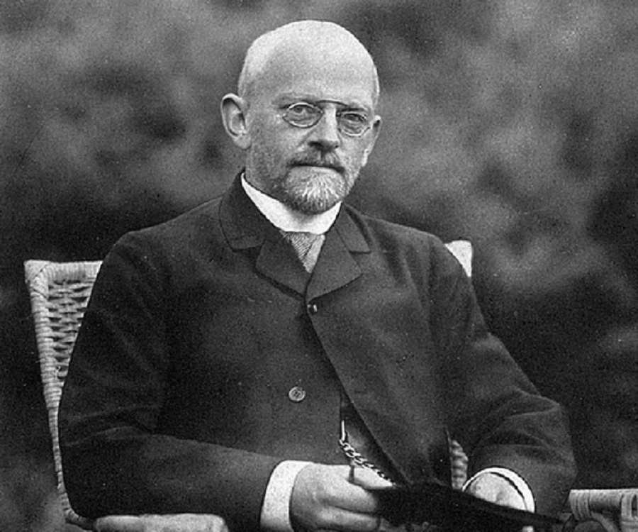

Computation & the Turing Machine
Computation

- Hilbert’s Ten’s problem, 1900
- Entscheidungsproblem, 1928
Computation

- Entscheidungsproblem, 1928
- Gödel’s incompleteness theorem
Computation

- Entscheidungsproblem, 1928
- Turing machine
Computation

- Entscheidungsproblem, 1928
- $\lambda$-calculus
Computation
- von Neumann computing model
- EDVAC
Turing Machine
A completely mechanical device (1928)
envisioned by Alan Turing as an intuitive formalism to describe the non-existing phenomenon of machine driven reasoning, now known as computation.
Realized into an actual design (1945)
John von Neumann designed an electronic version to simulate the mechanical definition of a TM in a document known as First Draft of a Report on the EDVAC, 1945.
Turing-complete
TM is the most powerful computing model we know. Up to know, we don’t know any other computing models more powerful than a TM.
Turing Machine
Computational power of TM
Church-Turing Thesis
If a procedure (algorithm) can be executed by any computer, then it can be executed by a Turing Machine.
Turing Complete
If a mechanism is equivalent to TM, then it’s called Turing Complete.
Simulation of a function
Computable functions
A function $f$ is computable if:
- Its input can be encoded as a binary string:
$2^*$- Its output can be encoded as a binary string:
$2^*$- Its evaluation can always be carried out by a TM.
Any computable function can be implemented by a TM.
Any TM is some computable function.
Why is a TM always a function (over binary strings)?
Universal TM
Consider a TM: $M$.
It’s a function
$M:2^*\to 2^*$It’s mechanical description can be encoded as a binary string.
Function eval takes two inputs - a TM and an input, and it computes the output.
$$\mathrm{eval} :\mathrm{TM} \times 2^* \to 2^*$$
It’s input can be encoded as binary strings.
It can be carried out by a procedure.
By Church-Turing thesis, eval is computable, so there is a TM for it.
Definition Universal TM
The TM $\mathbf{U}$ that computes eval is called universal.
Universal TM
The TM $\mathbf{U}$ initializes the tape with the binary encoding of:
a TM, $M$
an input, $x$
It outputs $\mathbf{eval}(M, x)$
Modern Computer:
$M$ is the program
$x$ is the input to the program
$\mathbf{U}$ is the general purpose computer
TM-Programming
We just need a single TM, namely $\mathbf{U}$.
The universal programming language is the encoding of $M$.
Summary
- Turing Machine is a mechanically realizable device.
- TM is as powerful (but a lot slower) as any modern computers.
- There is a very special TM that is called the Universal TM. It can be programmed!
- !